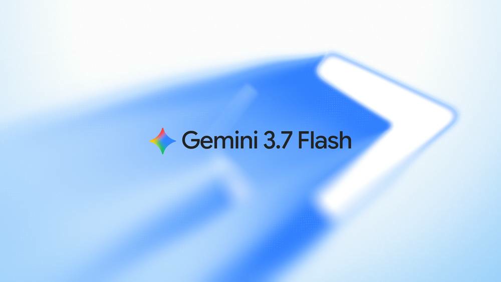

SpaceX zamyka Cursor. DeepSeek drożeje dziś. Q2 Anthropic.
Szeroki sweep · laby + media + HN/Reddit/X + narzędzia + crowdfunding. Cisza oficjalnych blogów ≠ pusta strona.
TL;DR

SpaceX oficjalnie zamyka przejęcie Cursor
WAŻNE Blog Cursor: „Cursor has officially been acquired by SpaceX.” TechCrunch potwierdza close 15.08. Opcja z kwietnia, zamknięcie po IPO SpaceX, transakcja all-stock ok. 60 mld USD.
Cursor zapowiada największą flotę GPU oraz tańsze i mocniejsze modele; Grok 4.6 ma być wczesnym podglądem. SpaceX wynajmuje też compute Anthropicowi i Google. To była największa dziura cienkiego wydania niedzieli.
14–15.08.2026


Produkty i modele
DeepSeek-V4 peak/off-peak wchodzi dziś
Oficjalny changelog 13.08; cutover dziś 16.08 o 16:00 UTC / 18:00 CEST. Peak: 01:00–04:00 oraz 06:00–10:00 UTC (7 h). Reszta to off-peak = połowa nowego peaku.
Off-peak nie jest zniżką względem starego flat. Output V4-Flash: $0.28 → $0.66 / $1.32; V4-Pro: $0.87 → $1.98 / $3.96. Cache-hit nawet ok. 10–12×. Computerworld 13.08: popyt vs pojemność.
Changelog 13.08.2026 · ceny live 16.08.2026, 16:00 UTC
Gemini 3.7 Flash w AI Mode w Search
The Verge 14.08, 18:31 UTC (20:31 CEST — w oknie wydania): model jest w AI Mode w Search dla AI Pro/Ultra. To rollout Search, nie sam debiut modelu.
Launch 13.08 zostaje kontekstem: intro $0.75 / $3.75 do 31.12.2026, potem $1.50 / $7.50. FrontierCode 43,6% vs 34,4%; DeepSWE 65,3%.
The Verge 14.08.2026, 18:31 UTC · launch 13.08.2026
Brak nowych postów produktowych Anthropic / OpenAI / xAI (sob–niedz.)
Weekend bez nowych oficjalnych postów produktowych labów. Claude Code nadal v2.1.233 (14.08, 22:20 UTC) — nie ma 2.1.234+ przez cały weekend.
Cisza blogów nie znaczy pustej strony: close Cursora, cennik DeepSeek, Search rollout Gemini i dokumenty Q2 wypełniają niedzielę.
stan na 16.08.2026
Laby i research
Risk Report — nowy kąt 16.08: klasyfikatory biologii
The Decoder 16.08: klasyfikatory biologii były wyłączone ok. maj 2025–kwiecień 2026 na ruchu human-feedback od zewnętrznego kontraktora. Ok. 50 tys. osób, ok. 133 mln czatów.
Anthropic: śledztwo, brak dowodów nadużycia; zaostrzone wymagania wobec vendora. To kąt niedzieli — nie recykling piątkowego ratingu misalignment jako leadu.
The Decoder 16.08.2026 · raport 14.08.2026
Watermark — tylko follow-up, bez SynthID
Nie przerabiamy mechaniki. TechCrunch 15.08 i The Register 15.08 dopowiadają szczegóły. Business Insider on the record: Anthropic nie widzi wzrostowego trendu rezygnacji.
Detection API nadal „soon”, nie live. FAQ produktu zostaje kanonicznym postem, nie newsem weekendu.
15.08.2026 · follow-up
Biznes
SpaceX zamknął przejęcie Cursor
Blog Cursor 14.08: „Cursor has officially been acquired by SpaceX.” TechCrunch 15.08, 9:30 PDT. Opcja z kwietnia, close po IPO SpaceX, all-stock ok. 60 mld USD.
Cursor: największa flota GPU, tańsze i mocniejsze modele; Grok 4.6 jako wczesny podgląd. SpaceX wynajmuje compute także Anthropicowi i Google. 9to5Mac 14.08 opisywał jeszcze deal jako „likely” — close jest nowszy.
Cursor 14.08.2026 · TechCrunch 15.08.2026, 9:30 PDT
Anthropic Q2 2026: >$11,5 mld vs $787 mln YoY vs $4,73 mld Q1
Bloomberg (14.08, 21:08 UTC) i CNBC (15.08): preliminary Q2 powyżej 11,5 mld USD wobec 787 mln rok wcześniej i 4,73 mld w Q1. ~14× YoY. Pierwszy dodatni adjusted operating income.
Źródło: wstępne dokumenty inwestorskie, nie blog firmy. CNBC: rzecznik nie skomentował natychmiast. Majowy run-rate $47 mld to starsza, firmowa liczba — nie mylić z Q2. Wycen IPO 1–2 bln USD nie podajemy jako faktu.
Bloomberg 14.08.2026, 21:08 UTC · CNBC 15.08.2026
Pax Silica — draft listu USA do 35 krajów
Reuters 14.08: USA przygotowuje draft listu do 35 sygnatariuszy AI Opportunity Statement — wybór USA vs Chiny. State Dept bez komentarza do „purportedly leaked.”
Draft, data wysyłki nieznana. Ok. 2 tuziny członków Pax Silica (Japonia, Australia, Korea Płd., Kazachstan w obu zestawieniach).
14.08.2026 · draft, nie wysyłka
Pozew Grok rozszerzony (Jane Doe 4)
Fakt prawny, wysoko poziomowo: class action trzech nastolatek z Tennessee dołącza Jane Doe 4. Zarzut: ojczym użył Groka do wygenerowania seksualizowanych obrazów ze zdjęcia z dzieciństwa.
Pozwani: xAI / SpaceX; zarzut braku podstawowych zabezpieczeń. Zarzuty nieudowodnione w sądzie. TechCrunch 15.08 + relacja WaPo.
15.08.2026 · zarzuty, nie wyrok
Manus niezależny po blokadzie Pekinu
Computerworld 14.08: Meta odwija deal wart ok. 2 mld USD po blokadzie NDRC (kwiecień). Manus wraca do samodzielnych operacji.
Backup danych do ok. 22.08; usuwanie 23–24.08. The Register 12.08 opisywał ucieczkę z orbit Meta.
Computerworld 14.08.2026 · backup do ~22.08.2026
Open-source / dev
HF State of Open Models Summer 2026
Raport 14.08: 2,43 → 2,96 mln modeli. Chińskie laby niemal co miesiąc wypuszczają większe otwarte wagi niż USA. 178 chińskich wydań >20B: 59% Apache 2.0, 22% MIT, zero non-commercial.
Qwen: 151 448 pochodnych (2,6× Meta). Agenci: Claude Code 44,4% tagged w lipcu (było 67,8% w kwietniu); Codex 10 → 21%.
14.08.2026
DeepSeek Harness — MIT, everything is a plugin
The Register 14.08 i SitePoint 15.08: Harness (Cordis) traktuje wszystko jako plugin. Runtime agenta OSS kontra lock-in Claude Code / Codex.
Developer preview, licencja MIT. To narzędzie i sygnał OSS, nie sam cennik V4.
The Register 14.08.2026 · SitePoint 15.08.2026
Claude Code nadal v2.1.233
Brak 2.1.234+ przez cały weekend. Tag v2.1.233 zostaje ostatnim publicznym release’em.
Nie interpretować ciszy jako rollback auto mode — to osobny wątek HN, nie nowy changelog.
14.08.2026, 22:20 UTC · stan 16.08
Codex CLI rust-v0.148.0-alpha.20
Tag na GitHubie 16.08 o 00:21 UTC. Brak changelogu — cienki sygnał, jedna linijka, nie recenzja release’u.
16.08.2026, 00:21 UTC
Narzędzia
DeepSeek Harness jako runtime agenta
OSS, model pluginowy — alternatywa wobec lock-in Claude Code i Codex. To narzędzie dnia, nie tylko news labów.
Warto zestawić z oficjalnym Responses API DeepSeek (kompatybilność Codex).
14–15.08.2026
DeepSeek API + Codex Responses
Oficjalne docs: Responses API i kompatybilność Codex. Peak/off-peak od dziś 16:00 UTC zmienia rachunek kosztów — off-peak to połowa nowego peaku, nie zniżka vs stary flat.
16.08.2026, 16:00 UTC
Gemini 3.7 Flash jako tani coding/agent default
Intro $0.75 / $3.75 do 31.12.2026. Nadal najczytelniejszy tani default na coding i agentów, dopóki trwa intro — plus dzisiejszy rollout w Search AI Mode.
13.08.2026 · intro do 31.12.2026
Claude Code auto mode — default od 14.08, spór na HN
Auto mode jest defaultem od 14.08. Wątek HN żyje; to nie nowość weekendu, tylko nadal aktualne narzędzie i punkt tarcia builderów.
default od 14.08.2026
Grok 4.6 w GitHub Copilot — nadal rolling
Changelog GitHub 14.08: Grok 4.6 available in Copilot. Nadal się wdraża, nie „nowość niedzieli”. Do checklisty: czy picker już pokazuje 4.6.
14.08.2026 · rolling
SpaceXAI / Cursor: SuperGrok Heavy na X
Karta trendu X (~1 h, 277 postów): „SpaceXAI Extends Free Cursor Ultra for SuperGrok Heavy”. Brak URL pojedynczego posta — tylko trend społeczności, nie oficjalny changelog Cursor / xAI.
16.08.2026 · ~1 h, 277 postów
Gadżety
MemoMind One — okulary AI
~ $1,1 mln, 11047% funded, zamyka 27.08.2026. Bez kamery, privacy-first. Crowdfunding, nie produkt w sprzedaży.
Liczby z trackera BackerLens (weryfikacja 16.08), nie z API Kickstartera.
zamyka 27.08.2026 · snapshot 16.08
LUMISTAR CARRY — robot koszykarski
~ $1,2 mln. Quad-camera AI basketball training partner. Zamyka 21.08.2026 — najbliższy deadline z trójki.
Snapshot trackera, nie KS API. Crowdfunding, nie shipping.
zamyka 21.08.2026 · snapshot 16.08
Lumi AI Dock — agent na telefonie
Fizyczny agent, który używa Twojego telefonu. ~$51 tys., 1024% funded, zamyka 4.09.2026.
Mniejsza kampania, to samo zastrzeżenie: tracker, nie oficjalne API KS.
zamyka 4.09.2026 · snapshot 16.08
Sygnały X + Reddit + HN
HN: Why does Opus 5 feel worse
~947 pkt / ~840 komentarzy. Esej o tym, czemu Opus 5 „czuje się gorzej” — największy wątek społeczności weekendu.
żywy 16.08.2026
HN: Codex 232× kernel
420 pkt. Autoresearch / kernel — drugi duży wątek deweloperski, nie changelog OpenAI.
żywy 16.08.2026
HN: AI = leadership
301 pkt. Nota: praca z AI czuje się jak leadership. Sygnał managerski, nie produkt.
żywy 16.08.2026
HN: Risk Report PDF + auto mode
Wątek pod Aug 2026 Risk Report nadal primary. Osobno: spór o auto mode jako default od 14.08.
primary 14.08.2026 · wątki żywe 16.08
OpenAI community: crash macOS po 1–3 min
Jeden raport: ChatGPT Desktop 26.810.50856 pada po 1–3 minutach — computer use / sky node thread exhaustion. To wątek użytkowników, nie status incydentu.
15.08.2026
Linux desktop: Plus widzi Chat+Codex, nie Work
Wątek preview Codex w ChatGPT Desktop na Linuxie: konta Plus widzą Chat+Codex, nie Work. Komentarz #42.
preview · community
@thsottiaux: token ≠ token
Tibo (OpenAI), 16.08 05:52 UTC: porównywanie $/M między modelami jest mylące, bo token OpenAI to nie ten sam token co u innych. Kontekst do cennika DeepSeek i intro Gemini.
16.08.2026, 05:52 UTC
@minchoi: Grok 4.6 „scary good”
16.08 03:27 UTC, ~302 tys. wyświetleń. Sygnał builderski, nie changelog xAI. Pasuje do rolling Grok 4.6 w Copilocie.
16.08.2026, 03:27 UTC
@jun_song: Qwen3.8-27B vs benchmaxxed
16.08 03:05 UTC. Sygnał open-weights obok raportu HF Summer 2026 — nie mylić z oficjalnym benchkiem labów.
16.08.2026, 03:05 UTC
Codex $80 weekly-reset — pushback + karta trendu
@ishuagra02: opór wobec $80 weekly-reset. Sidebar: „OpenAI Codex Users Criticize $80 Weekly Reset Fee” (~17 h, 6,2 tys. postów) — karta trendu, bez URL pojedynczego posta.
16.08.2026 · trend ~17 h
@janschultecom: Claude Code buggier
Sygnał buildera: Claude Code buggier (allow/deny). Czytać razem z HN auto mode — ten sam stos, inny objaw. Nie issue tracker Anthropic.
16.08.2026
@thdxr: buyer DeepSeek Flash kwestionuje claim
Jeden z większych buyerów DeepSeek Flash pyta o claim. Kontekst do dzisiejszego peak/off-peak, nie recenzja V4-Pro i nie werdykt „kłamie”.
15–16.08.2026
Co warto dziś sprawdzić
- DeepSeek prices after 18:00 CEST — DeepSeek Pricing.
claude --versionnadal 2.1.233? — GitHub.- Watermark detection API nadal soon? — Anthropic.
- Gemini 3.7 w Search AI Mode dla Pro/Ultra — The Verge.
- Copilot Grok 4.6 picker — GitHub Blog.
- Kickstarter AI discover — Kickstarter.
- Manus backup do ~22.08 — Computerworld.
3 tweets ready to post
https://cursor.com/blog/joining-spacex
https://api-docs.deepseek.com/quick_start/pricing
https://www.bloomberg.com/news/articles/2026-08-14/anthropic-revenue-ahead-of-ipo-surges-over-14-fold-in-second-quarter